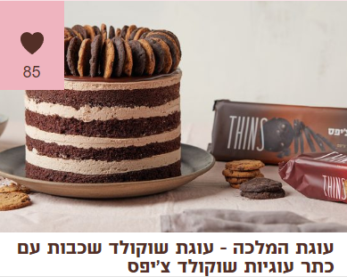

מצרכים:
-
לבסיס:
- 5 ביצים L
- 1 כוס סוכר
- 1 כוס קמח
- 1 שקית אבקת אפייה
- 5 כפות קקאו עלית
-
למוס שוקולד:
- 300 גרם שוקולד פרה חלב
- 500 מ"ל (2 מיכלים) שמנת מתוקה
- צנצנת ריבה שאוהבים או מייפל
-
לעיטור:
- 100 גרם שוקולד מריר פרה
- 50 מ"ל שמנת מתוקה
- עוגיות שוקולד צ'יפס THINS עלית
אופן ההכנה:
- בקערה שמתאימה למיקרו שמים 300 גרם שוקולד ביחד עם מיכל (250 מ”ל) שמנת מתוקה וממיסים עד לקבלת רוטב שוקולד מבריק. מעבירים למקרר לשעתיים.
- משמנים רינג בקוטר 22 ס”מ בתרסיס שמן ומצמידים לדפנות ולתחתית נייר אפייה.
- מחממים תנור ל-165 מעלות.
- מפרידים את הביצים לחלבונים וחלמונים ומקציפים רק את החלבונים עם הסוכר עד לקבלת קצף יציב.
- מוסיפים את החלמונים ומקציפים עוד 2 דקות.
- מנפים פנימה קמח, קקאו ואבקת אפייה ומקפלים עד לקבלת תערובת אחידה.
- מוזגים את הבלילה לתבנית העוגה ואופים במשך 45 דקות או עד שהעוגה יציבה. אפשר גם לאפות את העוגה ב-2 תבניות בקוטר 22 ואז לא תצטרכו לחתוך אותה באמצע אחרי האפייה.
- מקררים היטב את העוגה במקרר, מוציאים וחותכים לשכבות בעובי שרוצים. אפשר חתוך ל-2 שכבות או ל-3 או ל-4.
- מוציאים את השוקולד והשמנת שהתקררו בינתיים במקרר ומעבירים לקערת מיקסר עם וו הקצפה.
- מוסיפים את יתרת השמנת ומקציפים עד לקבלת מוס יציבה.
- ועכשיו מרכיבים: מניחים שכבה ראשונה של טורט ומרטיבים אותו עם מייפל או ריבה שאוהבים.
- מזלפים שכבה של מוס ומניחים מעל שכבת טורט. חוזרים על השכבות כשהשכבה העליונה היא שכבת הטורט.
- לעיטור מעל: ממיסים ביחד שוקולד ושמנת עד לקבלת רוטב חלק. מצננים מעט.
- מורחים את הגאנש על החלק העליון של העוגה וממתינים שיתייצב מעט.
- מעטרים מסביב עוגיות שוקולד צ’יפס ומגישים.